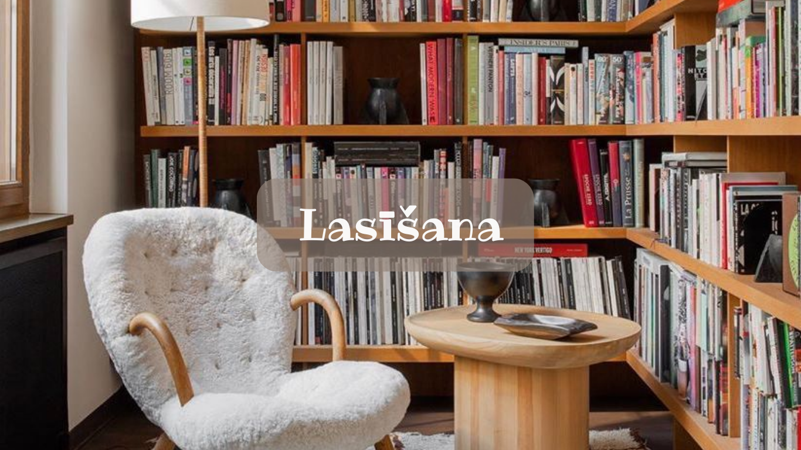

 21. gadsmitā, kad darba ir daudz un laika trūkumu izjūt gandrīz visi sociāli aktīvi cilvēki, laba laika plānošanas prasme ir liels palīgs ikdienā. Ierašanās laikā, atzvanīšana uz neatbildētu zvanu, atbildes uz e-pastiem, saplānotas tikšanās ar ierēķinātu laiku, lai nokļūtu no punkta A uz punktu B, ir mūsdienīga darbinieka viena no būtiskākajām iemaņām
21. gadsmitā, kad darba ir daudz un laika trūkumu izjūt gandrīz visi sociāli aktīvi cilvēki, laba laika plānošanas prasme ir liels palīgs ikdienā. Ierašanās laikā, atzvanīšana uz neatbildētu zvanu, atbildes uz e-pastiem, saplānotas tikšanās ar ierēķinātu laiku, lai nokļūtu no punkta A uz punktu B, ir mūsdienīga darbinieka viena no būtiskākajām iemaņām
 Kļūdas gadās ikvienam, tas ir normāli, īpaši pie liela darba apjoma, bet, protams, jādara viss, lai tās nepieļautu un kļūdīšanās nekļūtu par ikdienu. Tajā pašā laikā dažādi misēkļi un neveiksmes ir pamats jaunām mācībām, sevis pilnveidei un analīzei. Tās ļauj saprast, kā nākotnē rīkoties labāk.
Kļūdas gadās ikvienam, tas ir normāli, īpaši pie liela darba apjoma, bet, protams, jādara viss, lai tās nepieļautu un kļūdīšanās nekļūtu par ikdienu. Tajā pašā laikā dažādi misēkļi un neveiksmes ir pamats jaunām mācībām, sevis pilnveidei un analīzei. Tās ļauj saprast, kā nākotnē rīkoties labāk.
 Neattīstot savas prasmes un zināšanas, tās novecos dažu gadu laikā. Pabeidzot skolu, bieži beidzas vai uz laiku tiek pārtraukta arī sistemātiska mācīšanās, tomēr, ja cilvēkam piemīt zinātkārte, viņš aktīvi izmantos iespējas turpināt attīstību. Tādu ir daudz – kolēģu pieredze, dažādi semināri, webināri, interneta resursi. Vajadzīga tikai tik ļoti svarīgā aizrautība un zinātkāre.
Neattīstot savas prasmes un zināšanas, tās novecos dažu gadu laikā. Pabeidzot skolu, bieži beidzas vai uz laiku tiek pārtraukta arī sistemātiska mācīšanās, tomēr, ja cilvēkam piemīt zinātkārte, viņš aktīvi izmantos iespējas turpināt attīstību. Tādu ir daudz – kolēģu pieredze, dažādi semināri, webināri, interneta resursi. Vajadzīga tikai tik ļoti svarīgā aizrautība un zinātkāre.
 Vienīgā lieta, kas ir pilnīgi droši zināma par nākotni – tā būs atšķirsies no tagadnes. Mēs dzīvojam strauju pārmaiņu laikmetā un izdzīvo tās kompānijas, kas ir spējīgas ātri adaptēties jauniem apstākļiem, izmantojot jauninājumu sniegtās iespējas un pašām tos radot. Ne visiem ir viegli pieņemt pārmaiņas, bet bez tām attīstība ir neiespējama.
Vienīgā lieta, kas ir pilnīgi droši zināma par nākotni – tā būs atšķirsies no tagadnes. Mēs dzīvojam strauju pārmaiņu laikmetā un izdzīvo tās kompānijas, kas ir spējīgas ātri adaptēties jauniem apstākļiem, izmantojot jauninājumu sniegtās iespējas un pašām tos radot. Ne visiem ir viegli pieņemt pārmaiņas, bet bez tām attīstība ir neiespējama.
Katru dienu sāku ar kafijas gatavošanu un pārtikas pasniegšanu. Strādājot, es uzlaboju komunikācijas prasmes un iemācījos risināt problēmas efektīvi. Iepazinos ar dažādām personībām, un darba laikā piedalījos arī organizatoriskās aktivitātēs. Tas bija gan izaicinošs, gan bagātinošs piedzīvojums, kas sniedza ne tikai papildu ienākumus, bet arī jaunas prasmes un draugus.
Pagājušajā vasarā strādāju zoodārzā. Mans uzdevums bija izveidot izglītojošas prezentācijas par dzīvniekiem, vadīt ekskursijas un piedalīties dzīvnieku veselības pārbaudēs. Darbs bija aizraujošs, iepazinu dažādas dzīvnieku sugas, mācījos par to bioloģiju un veicināju sabiedrības izpratni par vides aizsardzību.


© 2023